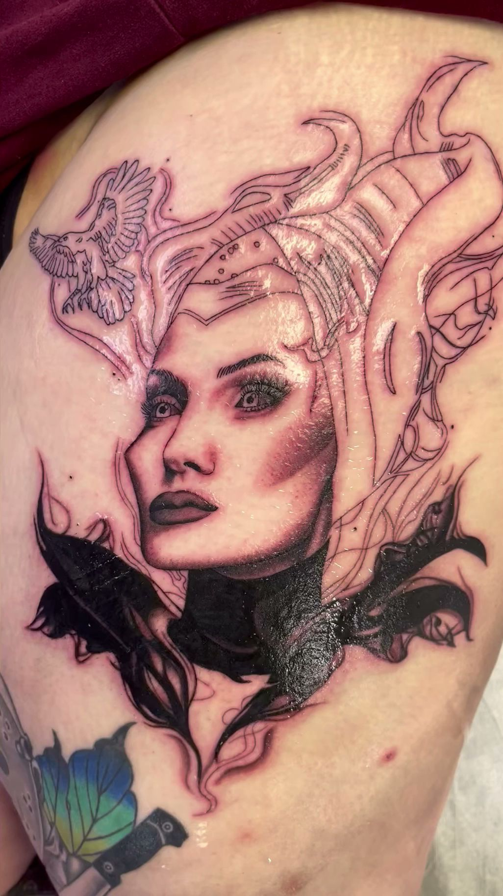
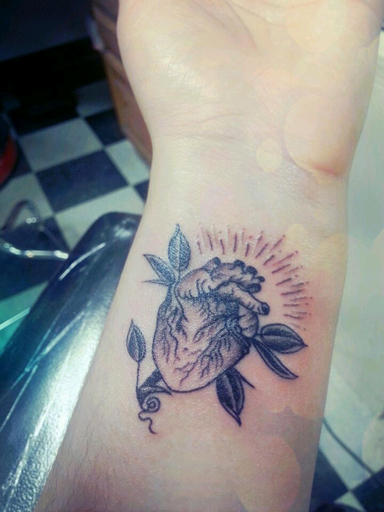
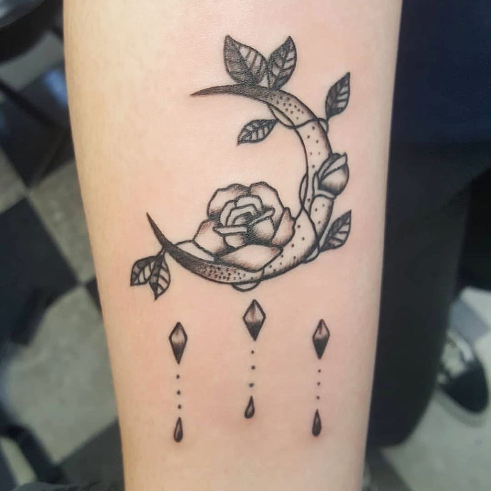
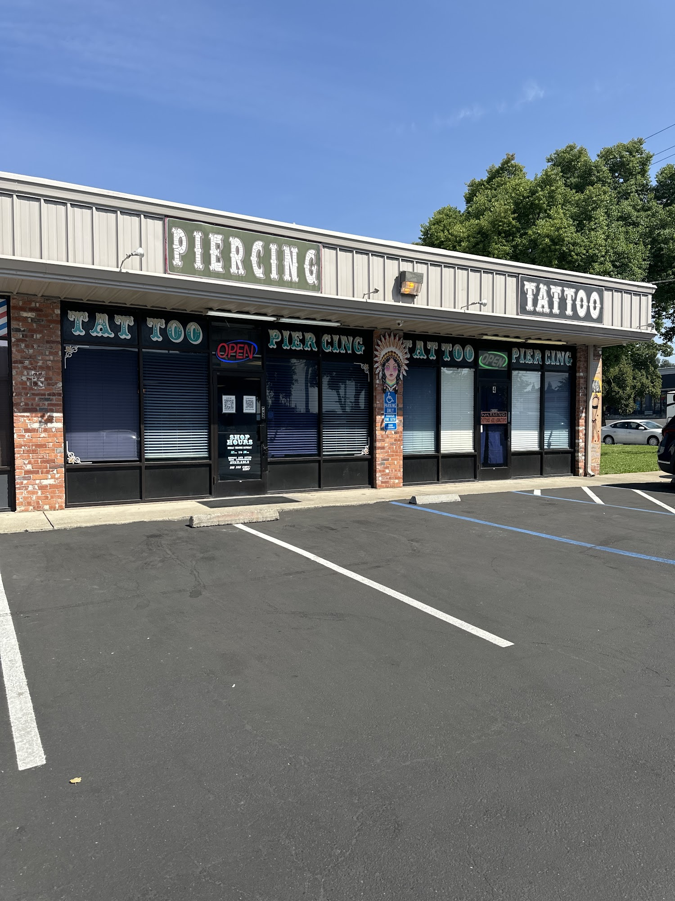

Samantha HlavayReview source“The piercer was incredibly nice and welcoming.”
BODY BAZZARE / EST. 1999
Your story.
In your skin.
Tattoos, piercing & tooth gems in Sacramento. Bring an idea. We’ll help you make it yours.
5847 AUBURN BOULEVARD
Open every day, noon–10 p.m.
Call ahead for tattoo walk-ins.

View artworkTHE STUDIO
Sacramento roots.
Individual expression.
Body Bazzare has been part of Sacramento's body art community since 1999. Come in for custom tattoo design, body piercing and jewelry, with free consultations and support after your visit.
From your first piece to the next addition, come in with your references, your questions and your own sense of style.
SELECTED WORK
Details worth
a closer look.
Explore the linework, shading and small details. Open any piece to see it in full.
More from @bodybazzare
View artwork
View artworkCrescent moon image attributed to @bodybazzare by Looks Like Candy.
FROM IDEA TO INK
A good place
to begin.
- Gather a little inspirationBring references, sketches or an idea to talk through.
- Find your fitDiscuss size, placement and style with an artist.
- Make a planAsk about pricing and availability before your session.
TATTOOING
Your next piece
starts here.
Custom work and pre-designed artwork, with styles including traditional, black and gray, tribal and contemporary. Talk with an artist about the design, placement and scale that suit your project.
Bring your references.
Have a few images, an approximate size and a placement in mind. A free consultation gives you space to work through the details and ask about pricing.
Thinking about today? Call before walking in.
BODY PIERCING
A new detail.
Entirely you.
Ear, nose, navel and other body piercings. Our piercers can talk you through placement, jewelry options and the care your piercing will need.
Support after your visit
The studio offers piercing checkups and individual aftercare guidance. Contact the team if you have questions about your piercing.
Jacob DunkleyBody piercer / @piercingsbyjacob
Meet JacobFROM GOOGLE REVIEWS
In our clients’ words.
Ken BReview source“The shop is clean, inviting”
Joshua RobbinsReview source“Had a phenomenal time getting a tattoo from Peet!!!”
Selected Google review excerpts, reproduced by Tattoo Studios. Excerpts are shortened; follow the links for the full reviews.
ALSO AT THE STUDIO
A little more
Body Bazzare.
Tooth gems
Ask the team about the available designs, colors and application appointments.
Ask about tooth gemsFree consultations
Discuss your tattoo or piercing, get answers and plan your next visit with the studio.
Email your ideaStudio news
Meet the people behind Body Bazzare and explore stories from the studio.
Visit the studio journalBEFORE YOU COME IN
Good questions
to start with.
For anything specific to your tattoo or piercing, speak with the studio.
Do I need an appointment?
Please call (916) 332-8287 ahead if you are planning a tattoo walk-in. The team can confirm current tattoo and piercing availability.
How much will my tattoo cost?
Pricing depends on your design, size, placement and the work involved. Bring your references to a free consultation so the studio can discuss the project with you.
How long does a tattoo take?
Timing varies with the size and complexity of the piece. Larger work can require multiple sittings. Your artist can help you plan the time needed for your design.
What about aftercare?
Ask your artist or piercer for instructions specific to your service. The studio also offers piercing checkups and can answer questions after your visit.
Do you offer horizontal tongue piercings?
No. Body Bazzare's published policy is that the studio does not perform horizontal tongue, or “snake eyes,” piercings. A piercer can discuss other options with you.
COME BY THE STUDIO
Find us on
Auburn Boulevard.

The hours
Monday–Sunday
Noon–10 p.m.